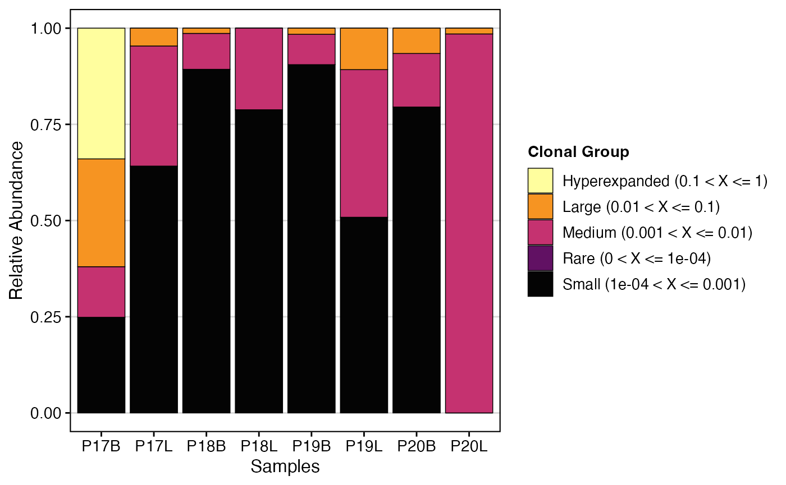
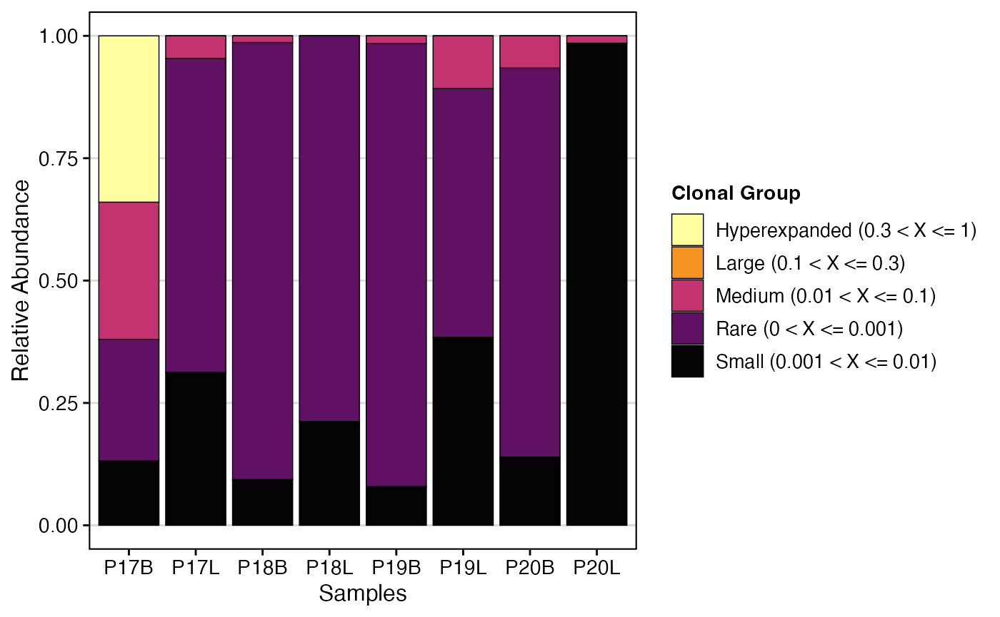

Visualizing Clonal Dynamics
Compiled: January 10, 2024
Clonal_Dynamics.RmdclonalHomeostasis
By examining the clonal space, we effectively look at the relative space occupied by clones at specific proportions. Another way to think about this would be to think of the total immune receptor sequencing run as a measuring cup. In this cup, we will fill liquids of different viscosity - or different numbers of clonal proportions. Clonal space homeostasis asks what percentage of the cup is filled by clones in distinct proportions (or liquids of different viscosity, to extend the analogy). The proportional cut points are set under the cloneSize variable in the function and can be adjusted.
cloneSize
- Rare = 0.0001
- Small = 0.001
- Medium = 0.01
- Large = 0.1
- Hyperexpanded = 1
clonalHomeostasis(combined.TCR,
cloneCall = "gene")
We can reassign the proportional cut points for cloneSize, which can drastically alter the visualization and analysis.
clonalHomeostasis(combined.TCR,
cloneCall = "gene",
cloneSize = c(Rare = 0.001, Small = 0.01, Medium = 0.1, Large = 0.3, Hyperexpanded =
1))
In addition, we can use the group.by parameter to look at the relative proportion of clones between groups - such as tissue.
combined.TCR <- addVariable(combined.TCR,
variable.name = "Type",
variables = rep(c("B", "L"), 4))
clonalHomeostasis(combined.TCR,
group.by = "Type",
cloneCall = "gene")
clonalProportion
Like clonal space homeostasis above, clonal proportion places clones
into separate bins. The key difference is that instead of looking at the
relative proportion of the clone to the total, the
clonalProportion() function will rank the clones by total
number and place them into bins.
The clonalSplit represents the ranking of clonotypes by copy or frequency of occurrence, meaning 1:10 are the top 10 clonotypes in each sample. The default bins are under the clonalSplit variable in the function and can be adjusted, but they are as follows at baseline.
clonalSplit
- 10
- 100
- 1000
- 10000
- 30000
- 100000
clonalProportion(combined.TCR,
cloneCall = "gene")
clonalProportion(combined.TCR,
cloneCall = "nt",
clonalSplit = c(1, 5, 10, 100, 1000, 10000))